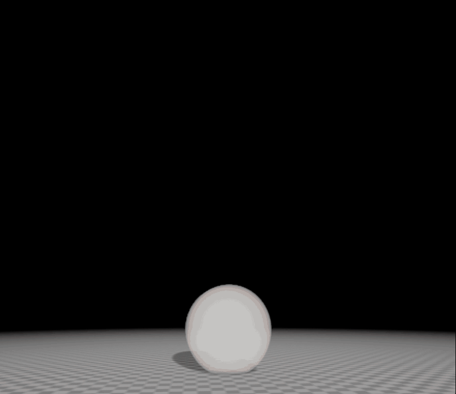
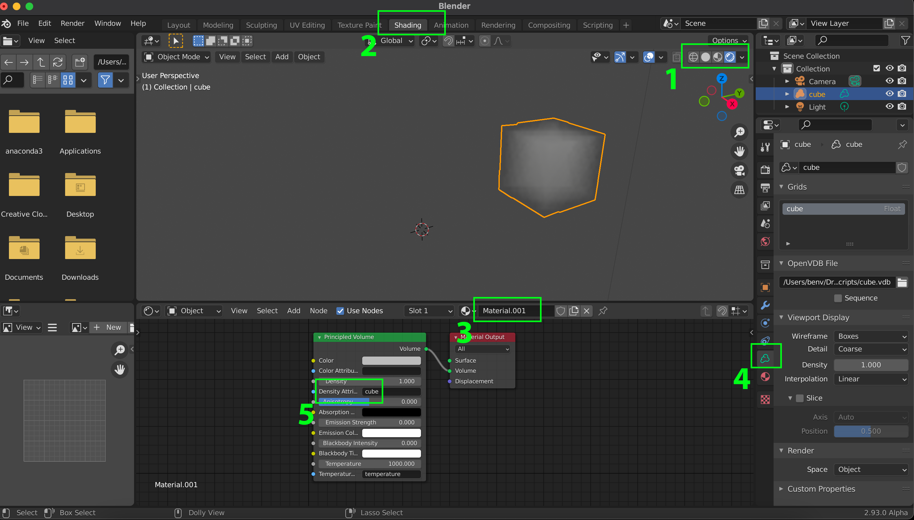
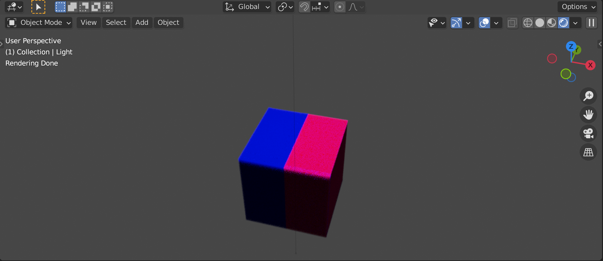

Visualizing volumetric data through OpenVDB¶
In this section we will show a simple example of how to visualize custom volumetric data with Blender and Python. The current support in Blender for volumetric data is directly tied to the OpenVDB file format. In fact, the only way to create a volume object is to load an OpenVDB file. This is a file format and data structure that originated from the motion-picture industry, where it is often used to show clouds, smoke and fire in computer graphics like movies and games. Here's an example of such a volumetric rendering:
|  |
|---|
| Gasoline explosion. Free example from Embergen. |
The reason OpenVDB is used for many volumetric data applications in computer graphics is that is allows sparse volumes to be stored efficiently, while also providing easy querying of the data, for example during rendering. OpenVDB is also a bit more than just a file format, as the OpenVDB library also supports more advanced operations. From the OpenVDB website:
OpenVDB is an Academy Award-winning C++ library comprising a hierarchical data structure and a suite of tools for the efficient manipulation of sparse, time-varying, volumetric data discretized on three-dimensional grids. It is based on VDB, which was developed by Ken Museth at DreamWorks Animation, and it offers an effectively infinite 3D index space, compact storage, fast data access, and a collection of algorithms specifically optimized for the data structure for common tasks such as filtering, CSG, compositing, numerical simulation, sampling, and voxelization from other geometric representations.
For more documentation on OpenVDB see here. Some example OpenVDB files can be found here, under Sample Models.
Example¶
OpenVDB models are mostly generated with specialized software like Houdini and Embergen. Volumetric data in general is also used for scientific visualizations, for example in ParaView, but support for OpenVDB is still lacking somewhat. In this section we will explain how OpenVDB files can be made from scratch. For example for when you have you own volumetric data in your own data format and you want to visualize or animate this in Blender. To convert your data to a OpenVDB format we will use the Python package pyopenvdb.
First we will create data in Python and write it to an OpenVDB file using OpenVDB and the Python package pyopenvdb.
Installation of pyopenvdb¶
Installing the Python module to access the openVDB functionality can be very easy or more difficult depending on your operating system. See the installation instructions on the pyopenvdb website.
Tip
If you cannot get it to work that way, we made a simple Docker container you can use to run it, see here for the github repository.
Making a VDB file with pyopenvdb¶
Let us make a simple volumetric cube using pyopenvdb. To start we first load pyopenvdb and numpy:
And we make a zero filled array of size 400x400x400:
We then fill a cube sized portion of the array with the value 1:
for i in range(dimension):
for j in range(dimension):
for k in range(dimension):
if i < 200 and i >=100 and \
j < 200 and j >=100 and \
k < 200 and k >=100:
array[i,j,k] = 1.0
Now we come to the openvdb part, where we first need to make a grid. In this case we make a float grid (there are more grids besides a float grid for example a BoolGrid and Vec3SGrid are also standardly available).
We now copy the values in the array into the grid:
The last important thing we need to do before we save it to file is to name the grid. You will use this name later when using the grid in Blender.
The last thing left to do is to save the grid to file:
Loading a VDB file into Blender¶
Open a new Blender file and if its there, remove the starting cube. In the 3D viewport choose menu option Add > Volume > Import OpenVDB or use the shortcut Shift-A. Locate the cube.vdb file we just made through the script. You will most likely not see anything yet, so scale the cube down using the shortcut S until you can see the outline of the cube. Now if you change the **Viewport shading** in the top right of the 3D viewport to Rendered (see Fig. 1, #1), you will not see anything beside the outline since we still need to add a shader to the model.
|  |
|---|
| Figure 1: definition of coordinates |
Change to the Shading workspace (see Fig. 1, #2) and in the Shader editor click on new to make a new material (see Fig. 1, #3). You see Blender makes a Principled volume and Material output node. To make the cube appear we need to change one thing and for this we need to know the name of the grid in the VDB file.
From the Python script we know this is cube, but you can also figure out the grids and their names in a VDB file from within Blender. In the Properties panel go to Object Data Properties tab (see Fig. 1, #4). Here under Grids you can see the names of the grids in the VDB file. For now, in the Principled Volume node, add the name of the grid (cube) into the field next to Density Attribute (see Fig. 1, #5). This tells the node to use the values in the grid for the scattering density of the voxels.
💻 Coloring the cube¶
Now make a cube similar to the one we just made, but color it blue on one side and red on the other (See Fig. 2). First alter the Python script to include a second grid in the VDB file. In this second grid set one side of the cube to value 1 and the other to zero. Use an Attribute node (do not forget to add the grid name to the Name: field in the attribute node) to feed the second grid into a ColorRamp node (and choose the colors you want). Now feed the ColorRamp into the Color field of the Principled Volume. Do not forget to set the original grid in the Density Attribute.
Does it come out right? Maybe you need to play a bit with settings, like set the Density to 1. You might also need to play with the lighting. If you still have the original light in your scene, try increasing its Power and location. Now also see how it looks in Cycles compared to Eevee.
|  |
|---|
| Figure 2: Colored cube |